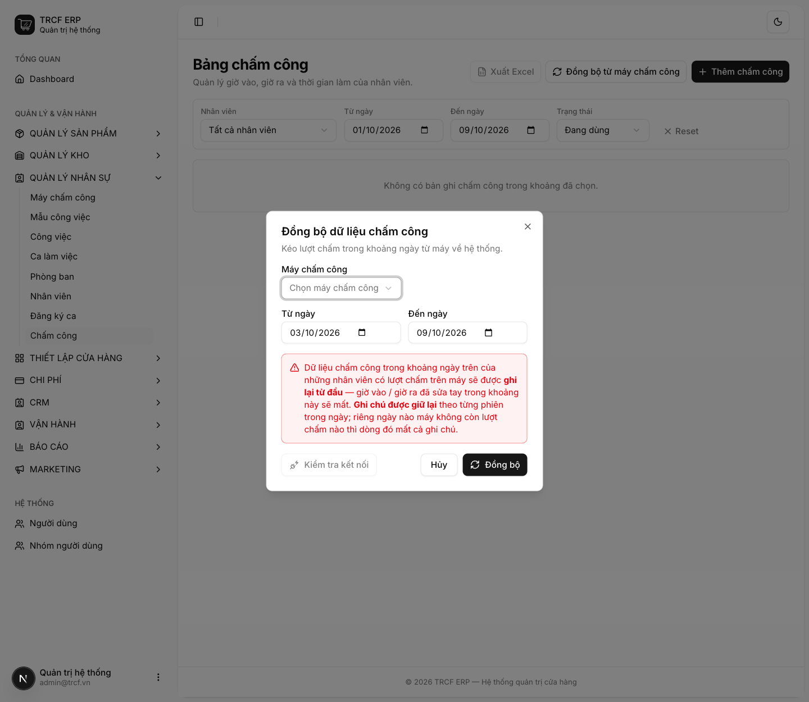

Bước 9 · Đăng ký ca, xếp lịch, chấm công
9.3 Đồng bộ chấm công
1. Đường dẫn vào chức năng
Menu trái: Quản lý nhân sự → Chấm công (địa chỉ /attendance).
2. Ví dụ nền và các bước thực hiện
Ví dụ: kéo giờ chấm công từ máy, bù tay khi quên chấm.
- Nhân viên "Nguyễn Văn An" có ID Chấm công "101".
- Quên chấm giờ ra: quản lý bù tay bằng Thêm chấm công.
Bước 1Mở Bảng chấm công
- Bấm Quản lý nhân sự → Chấm công.
- Lọc theo Nhân viên, Từ ngày / Đến ngày, Trạng thái.
- Bảng gom theo tháng, rồi theo nhân viên, rồi theo ngày.
- Dòng nhân viên có nhãn "N ngày thiếu giờ" nếu có ngày quên chấm.

Bước 2Đồng bộ từ máy chấm công
- Bấm Đồng bộ từ máy chấm công.
- Máy chấm công: chọn máy. Từ ngày / Đến ngày: chọn khoảng hẹp.
- Bấm Kiểm tra kết nối trước cho chắc.
- Đọc kỹ cảnh báo, rồi bấm Đồng bộ.
- Hệ thống ghép cặp vào–ra theo từng người từng ngày. Lượt lẻ cuối ngày để trống giờ ra.

Bước 3Bù tay khi quên chấm
- Bấm Thêm chấm công.
- Nhân viên: chọn "Nguyễn Văn An".
- Ngày công, Giờ vào, Giờ ra (không bắt buộc): nhập giờ thật.
- Ghi chú: nhập "Quên chấm giờ ra, quản lý bù tay".
- Bấm Lưu.

3. Giải thích các trường
Đọc bảng công
| Dấu hiệu | Nghĩa |
|---|---|
| Dấu — màu hổ phách ở cột Đi hoặc Về | Quên chấm. Dòng nhân viên hiện "N ngày thiếu giờ" |
| Badge tím "2 ca" | Ngày đó người này có hai lượt ca |
| Badge đỏ ở cột Đi | Đi trễ (hổ phách = đến sớm) |
| Badge xanh ở cột Về | Về muộn = làm thêm (đỏ = về sớm) |
Dung sai trễ/sớm chỉnh ở Cấu hình hệ thống → Nhân sự, mặc định 5 phút. Lệch trong khoảng này tính là Đúng giờ. Các cột: nhân viên, ngày, ca, vào, đi, ra, về, giờ làm, lương/giờ, thành tiền.
4. Lưu ý quan trọng
⚠️
Đồng bộ là GHI ĐÈ.
- Dữ liệu chấm công trong khoảng ngày của những người có lượt trên máy được ghi lại từ đầu.
- Mọi chỉnh sửa tay của quản lý trong khoảng đó sẽ mất.
- Đừng kéo cả tháng nếu chỉ cần bù một ngày.
💡
Khoảng 10% số ngày công chỉ có một lượt chấm (quên chấm vào hoặc ra).
- Rà cột "thiếu giờ" hằng tuần, đừng đợi cuối tháng.